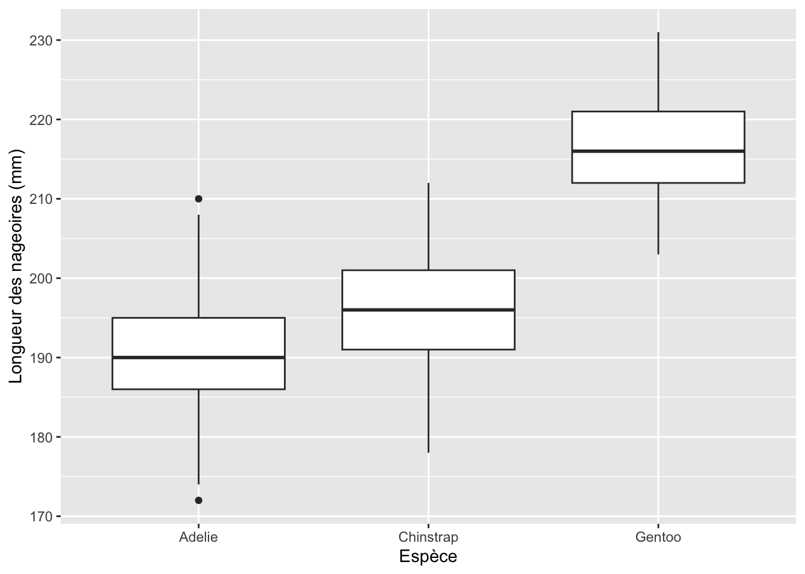
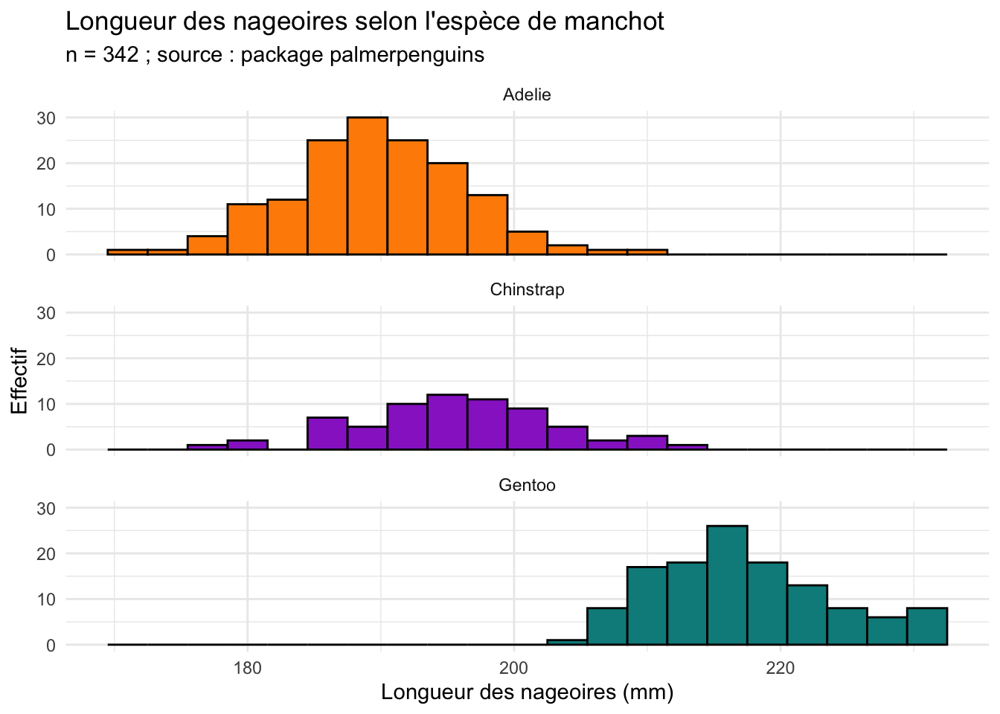
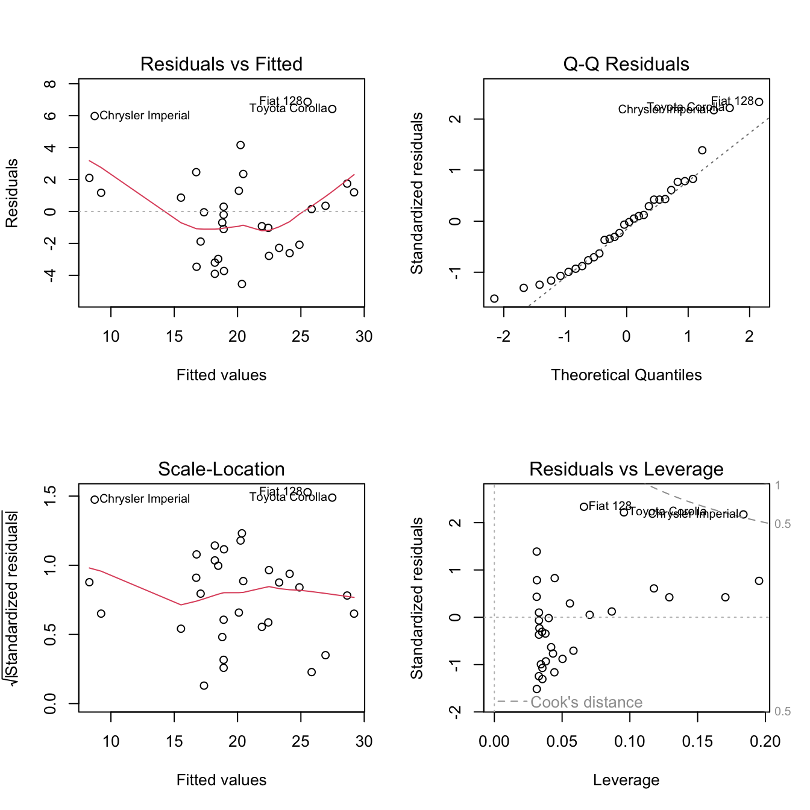
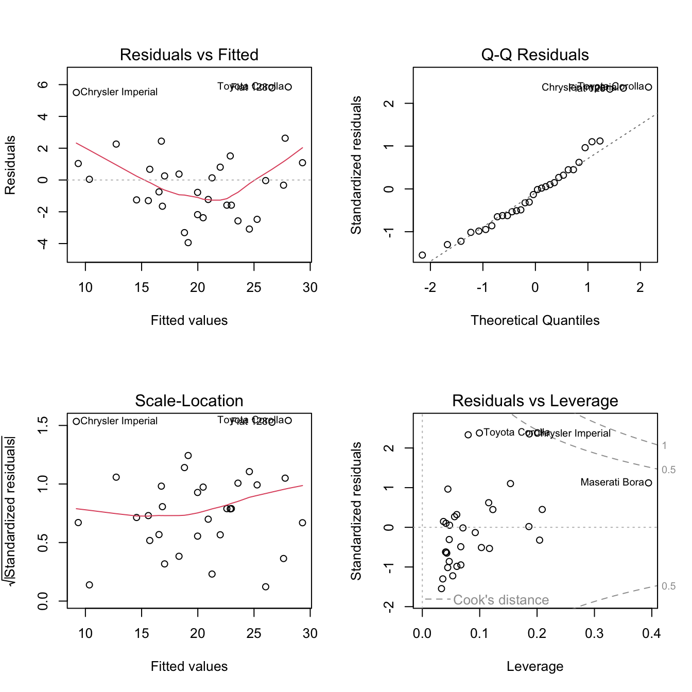
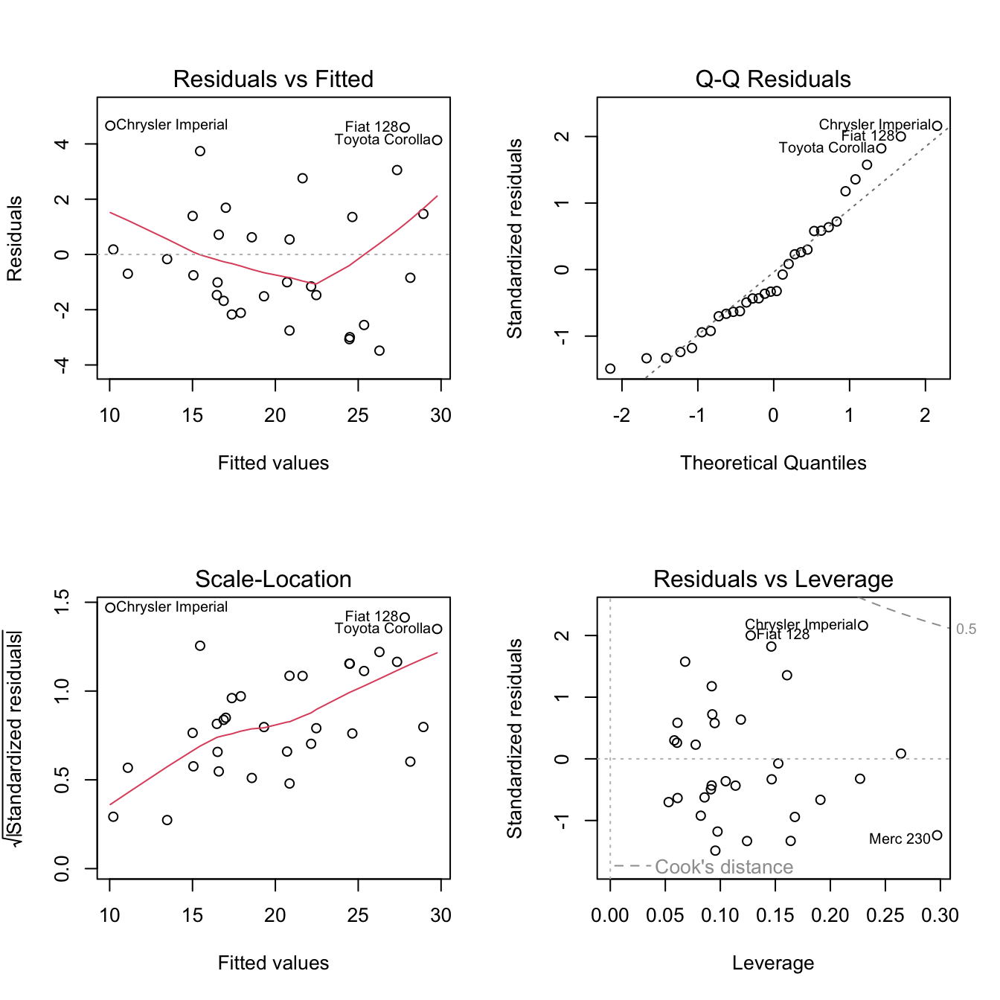
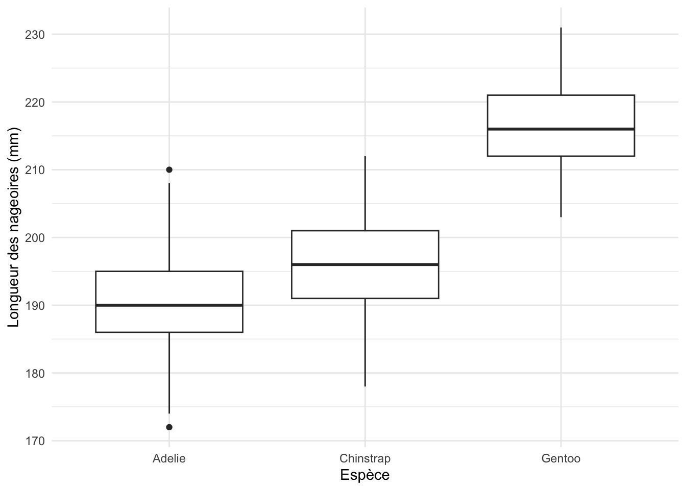

12Statistiques inférentielles II : ANOVA et régression
ImportantObjectifs d’apprentissage
Comparer les moyennes de plus de deux groupes avec une ANOVA (aov()) et des comparaisons deux à deux (TukeyHSD()).
Ajuster une régression linéaire simple et multiple avec lm().
Interpréter les coefficients, leurs valeurs p et le R² d’un modèle.
Vérifier les conditions d’application d’une régression à l’aide des graphiques de diagnostic.
Au chapitre 11, le test t vous a permis de comparer deux moyennes. Ce chapitre présente deux méthodes plus générales : l’ANOVA, qui compare plusieurs groupes, et la régression linéaire, qui décrit comment une variable numérique varie en fonction d’une ou de plusieurs autres.
12.1 L’analyse de la variance (ANOVA)
NoteDéfinition : analyse de la variance (ANOVA)
L’analyse de la variance (ANOVA) compare les moyennes d’une variable numérique entre trois groupes ou plus. Elle généralise ainsi le test t, qui compare au plus deux moyennes.
Son principe consiste à décomposer la variabilité totale de la variable en deux parts : la variabilité entre les groupes (les moyennes des groupes diffèrent-elles ?) et la variabilité à l’intérieur des groupes (la dispersion autour de chaque moyenne). Si la première est grande par rapport à la seconde, la statistique F est élevée et la valeur p faible : on rejette l’hypothèse nulle selon laquelle toutes les moyennes sont égales.
On appelle facteur la variable catégorielle qui définit les groupes : avec un facteur, on parle d’ANOVA à un facteur, avec deux, d’ANOVA à deux facteurs, etc. L’ANOVA a été développée par Ronald Fisher (voir le chapitre 4).
AvertissementAttention : conditions d’application
Comme le test t, l’ANOVA repose sur des conditions d’application : l’indépendance des observations ; dans chaque groupe, une distribution à peu près normale (vérifiable sur les résidus du modèle) ; des variances semblables entre les groupes (homoscédasticité).
Dans R, la fonction aov() est utilisée pour effectuer des ANOVAs à un ou plusieurs facteurs.
Elle prend en entrée une formule qui précise la variable à expliquer et les facteurs (variables catégorielles explicatives), ainsi qu’un tableau de données contenant les données. Syntaxe : aov(formula, data). La formule y ~ x se lit « y en fonction de x ».
La fonction aov() renvoie un objet de classe aov qui contient les résultats de l’analyse de variance, y compris
les sommes de carrés,
les degrés de liberté,
les valeurs de F et
les valeurs p pour chaque effet du modèle.
En résumé, aov() est utilisée pour ajuster des modèles linéaires à effets fixes et pour effectuer des analyses de variance.
Exemple 1 : ANOVA avec le jeu de données palmerpenguins
Pour cet exemple, il faut installer le package palmerpenguins(Horst et al., 2020). Celui-ci contient un jeu de données avec des informations sur trois espèces de manchots (Adélie, à jugulaire et papou ; en anglais Adelie, Chinstrap et Gentoo) qui vivent dans l’archipel de Palmer en Antarctique.
Les données ont été collectées entre 2007 et 2009 (Gorman et al., 2014) et comprennent des mesures telles que la longueur du bec (bill_length_mm), la longueur des nageoires (flipper_length_mm), le poids corporel (body_mass_g) et le sexe des manchots.
Installez le package une fois (voir le chapitre 4) :
install.packages("palmerpenguins")
Après l’installation, il suffit de charger le package avec library(palmerpenguins)
Le but de notre ANOVA est de déterminer si les différences de longueur moyenne des nageoires flipper_length_mm entre les trois espèces de manchots sont statistiquement significatives.
flipper_length_mm est donc notre variable quantitative à expliquer et
species est notre variable catégorielle qui indique à quelle espèce de manchots (Adelie, Chinstrap et Gentoo) chaque observation de flipper_length_mm appartient.
Le jeu de données compte 344 manchots, dont 2 sans longueur de nageoire mesurée : l’analyse porte donc sur 342 manchots.
library(tidyverse)library(palmerpenguins)# Explorez d'abord un peu la structure du jeu de donnéesstr(penguins)
tibble [344 × 8] (S3: tbl_df/tbl/data.frame)
$ species : Factor w/ 3 levels "Adelie","Chinstrap",..: 1 1 1 1 1 1 1 1 1 1 ...
$ island : Factor w/ 3 levels "Biscoe","Dream",..: 3 3 3 3 3 3 3 3 3 3 ...
$ bill_length_mm : num [1:344] 39.1 39.5 40.3 NA 36.7 39.3 38.9 39.2 34.1 42 ...
$ bill_depth_mm : num [1:344] 18.7 17.4 18 NA 19.3 20.6 17.8 19.6 18.1 20.2 ...
$ flipper_length_mm: int [1:344] 181 186 195 NA 193 190 181 195 193 190 ...
$ body_mass_g : int [1:344] 3750 3800 3250 NA 3450 3650 3625 4675 3475 4250 ...
$ sex : Factor w/ 2 levels "female","male": 2 1 1 NA 1 2 1 2 NA NA ...
$ year : int [1:344] 2007 2007 2007 2007 2007 2007 2007 2007 2007 2007 ...
# Deux manchots n'ont pas de longueur de nageoire mesurée :# on les retire.penguins_nageoires <- penguins %>%filter(!is.na(flipper_length_mm))nrow(penguins_nageoires) # 342
[1] 342
# Visualisez les distributions de flipper length avec des# boxplotsggplot(penguins_nageoires, aes(x = species, y = flipper_length_mm)) +geom_boxplot() +labs(x ="Espèce", y ="Longueur des nageoires (mm)")

# Comme alternative, vous pouvez aussi créer un histogramme# par espèce (un panneau par espèce, avec le même axe x)ggplot(data = penguins_nageoires, aes(x = flipper_length_mm,fill = species)) +geom_histogram(color ="black", binwidth =3,show.legend =FALSE) +facet_wrap(~species, ncol =1) +scale_fill_manual(values =c("darkorange","darkorchid", "cyan4")) +theme_minimal() +labs(title ="Longueur des nageoires selon l'espèce de manchot",subtitle ="n = 342 ; source : package palmerpenguins", x ="Longueur des nageoires (mm)",y ="Effectif")

# Calculs des variances de flipper length avec dplyr par# espèce de manchot, pour vérifier la condition de# variances similaires entre groupes :penguins_nageoires %>%group_by(species) %>%summarize(var_fl =var(flipper_length_mm))
# A tibble: 3 × 2
species var_fl
<fct> <dbl>
1 Adelie 42.8
2 Chinstrap 50.9
3 Gentoo 42.1
# ANOVA avec aov()anova_1 <-aov(flipper_length_mm ~ species, data = penguins_nageoires)summary(anova_1)
Df Sum Sq Mean Sq F value Pr(>F)
species 2 52473 26237 594.8 <2e-16 ***
Residuals 339 14953 44
---
Signif. codes: 0 '***' 0.001 '**' 0.01 '*' 0.05 '.' 0.1 ' ' 1
# à noter, avec TukeyHSD() nous pouvons vérifier davantage# les différences entre chaque paire d'espèces :TukeyHSD(anova_1)
Tukey multiple comparisons of means
95% family-wise confidence level
Fit: aov(formula = flipper_length_mm ~ species, data = penguins_nageoires)
$species
diff lwr upr p adj
Chinstrap-Adelie 5.869887 3.586583 8.153191 0
Gentoo-Adelie 27.233349 25.334376 29.132323 0
Gentoo-Chinstrap 21.363462 19.000841 23.726084 0
# La valeur p est très faible : on rejette H0 au seuil de 5# %.
12.2 La régression linéaire avec lm()
Explications théoriques de la régression linéaire
Dans des données réelles, on observe souvent une association entre deux variables : elles varient ensemble.
Par exemple, les personnes ayant un niveau d’éducation élevé ont en moyenne des salaires plus élevés. Il s’agit bien sûr d’une tendance moyenne : certaines personnes ayant un très faible niveau d’éducation ont des salaires très élevés, et vice versa. Il existe néanmoins, en moyenne, une association entre le niveau d’éducation et le salaire.
La question suivante est donc de savoir quelle est l’ampleur de cette association et s’il est possible de la quantifier.
Est-il possible, par exemple, de prédire une augmentation moyenne du salaire en % pour chaque année d’études supplémentaire ? Répondre à une telle question peut s’avérer compliqué pour différentes raisons.
Si l’éducation est importante, un certain nombre d’autres facteurs peuvent également influencer le salaire d’une personne, tels que l’âge, le sexe, l’origine sociale, l’expérience professionnelle, le secteur d’activité. Si ces autres facteurs ont également une influence sur le salaire, comment déterminer l’impact fractionnel du niveau d’éducation ?
Un autre problème, en particulier dans la pratique, est que nombre de ces autres facteurs peuvent ne pas être disponibles ou être difficiles à mesurer.
Et même si tous ces facteurs pouvaient être observés et contrôlés, la relation entre le niveau d’éducation et le salaire serait toujours soumise à un certain degré de hasard. Peut-être y a-t-il d’autres facteurs inconnus, ou peut-être y a-t-il simplement une fluctuation inexplicable du niveau de salaire entre tous les individus, même ceux qui ont des qualifications et des profils socio-économiques très similaires.
La régression linéaire permet de quantifier l’association entre x et y, éventuellement en tenant compte d’autres variables mesurées (« toutes choses égales par ailleurs »). Elle ne prouve pas à elle seule une relation causale : si des facteurs importants ne sont pas mesurés (p. ex. les capacités ou l’origine sociale), le coefficient de l’éducation peut être biaisé.
NoteDéfinition : régression linéaire
La régression linéaire est une méthode statistique utilisée pour modéliser la relation linéaire entre une variable à expliquer (y) et une ou plusieurs variables explicatives (x1, x2, etc.).
La variable à expliquer, y, est aussi appelée variable dépendante (angl. outcome ou response variable).
Les variables explicatives, x, sont aussi appelées variables indépendantes ou prédicteurs (angl. predictors).
Nous parlons de régression linéaire simple, s’il y a seulement une variable explicative x et de régression linéaire multiple s’il y a plus d’une variable explicative, p. ex. x1, x2, x3, etc.
En analyse de données, un modèle de régression a deux principaux types d’applications possibles :
Explication : nous pouvons décrire comment les variations observées de y sont associées aux variations observées de x. Une interprétation causale demande en plus des arguments théoriques ou un dispositif adapté (p. ex. une expérience).
Par exemple, considérons un échantillon aléatoire de données sur la taille et le poids des personnes. En moyenne, les personnes plus grandes pèsent plus que les personnes plus petites (association). Nous pourrions donc développer un modèle de régression qui décrit les variations de poids (y) en fonction des variations de taille (x).
Prédiction : Si nous disposons d’un échantillon représentatif de données contenant des observations des valeurs y et x, nous pouvons adapter un modèle de régression aux données. Par la suite, nous pouvons utiliser le modèle de régression pour un nouveau jeu de données qui ne contient que des valeurs x et prédire les valeurs y correspondantes.
Supposons par exemple que vous soyez un agent immobilier. Vous disposez d’un jeu de données de 200 ventes de maisons dans une ville au cours des cinq derniers mois, qui contient le prix de vente (y) et la taille de la maison en mètres carrés (x). Vous pouvez maintenant adapter un modèle de régression à vos données et l’utiliser pour prédire les prix de vente attendus des maisons actuellement sur le marché en fonction de leur superficie (x), que vous connaissez.
Notez qu’un modèle de régression linéaire, comme tout modèle, est toujours une simplification de la réalité. Par conséquent, la précision des modèles de régression linéaire appliqués à des données réelles ne sera jamais de 100 %, c’est-à-dire qu’elle est sujette à une erreur d’estimation.
Comprendre (et aussi quantifier) cette déviation du modèle de régression par rapport aux valeurs observées est également une étape importante de toute analyse de régression, comme nous le verrons par la suite.
Sur le plan technique, l’objectif de la régression linéaire est de spécifier une équation mathématique, appelée modèle de régression, qui quantifie la relation entre les variables y et x sur la base d’un ensemble d’observations.
Par exemple, dans le cas d’une régression linéaire simple avec une variable x, nous utiliserions l’équation suivante :
\[
y = \beta_0 + \beta_1 x + \epsilon
\] où :
\(y\) est la variable à expliquer
\(x\) est la variable explicative.
\(\beta_0\) est l’ordonnée à l’origine de la droite de régression.
\(\beta_1\) est la pente de la droite de régression.
\(\epsilon\) est le terme d’erreur aléatoire
NoteDéfinition : droite de régression
Si cela est trop abstrait pour certaines personnes : Nous pourrions également dire que, d’un point de vue pratique, l’objectif d’une régression linéaire simple est d’ajuster une ligne droite à un nuage de points. Le modèle de régression serait la droite de régression qui modélise la relation entre les variables y et x (les observations sous la forme d’un nuage de points).
La fonction lm()
La fonction lm() dans R est utilisée pour ajuster un modèle de régression linéaire. Elle est couramment utilisée dans le contexte de la régression linéaire pour étudier la relation entre une variable à expliquer (y) et une ou plusieurs variables explicatives (x1, x2, etc.).
La syntaxe de base de la fonction lm() est la suivante : lm(formula, data).
L’argument formula désigne une formule qui décrit le modèle à ajuster. Par exemple, y ~ x1 + x2 signifie que la variable à expliquer y est modélisée en fonction des variables explicatives x1 et x2.
L’argument data requiert l’indication du jeu de données que la régression doit utiliser en tant qu’entrée contenant les variables mentionnées dans la formule.
Exemple 2 : la régression linéaire à une variable avec mtcars
Voici un exemple d’utilisation de la fonction lm() avec le jeu de données mtcars : lm(mpg ~ wt, data = mtcars)
Notre but est de modéliser la relation entre la variable à expliquer mpg (miles par gallon) et la variable explicative wt (poids).
Notre hypothèse est qu’il existe une relation négative entre wt et mpg des véhicules dans mtcars. En d’autres termes, nous nous attendons à ce que les voitures plus lourdes aient tendance à parcourir moins de distance avec une unité de carburant que les voitures plus légères.
Nous supposons qu’il s’agit d’une relation de cause à effet, car les lois de la physique nous apprennent que l’accélération et le déplacement d’objets plus lourds nécessitent une force et une énergie plus importantes. Par conséquent, nous supposons que les voitures plus lourdes consomment généralement plus d’énergie sous forme de carburant que les voitures plus légères.
# Charger le jeu de données mtcarsdata(mtcars)# Ajuster un modèle de régression linéaire avec mpg comme# variable à expliquer et wt comme variable explicativemodele_1 <-lm(mpg ~ wt, data = mtcars)# Afficher le résumé du modèle que nous pouvons interprétersummary(modele_1)
Call:
lm(formula = mpg ~ wt, data = mtcars)
Residuals:
Min 1Q Median 3Q Max
-4.5432 -2.3647 -0.1252 1.4096 6.8727
Coefficients:
Estimate Std. Error t value Pr(>|t|)
(Intercept) 37.2851 1.8776 19.858 < 2e-16 ***
wt -5.3445 0.5591 -9.559 1.29e-10 ***
---
Signif. codes: 0 '***' 0.001 '**' 0.01 '*' 0.05 '.' 0.1 ' ' 1
Residual standard error: 3.046 on 30 degrees of freedom
Multiple R-squared: 0.7528, Adjusted R-squared: 0.7446
F-statistic: 91.38 on 1 and 30 DF, p-value: 1.294e-10
Le résultat de la régression linéaire indique que le modèle linéaire modele_1 prédit la variable à expliquer mpg en fonction de la variable explicative wt. Regardons le résultat plus en détail :
Les coefficients du modèle sont présentés dans la section Coefficients.
L’ordonnée à l’origine ((Intercept)) est estimée à 37,285 et le coefficient pour wt est estimé à -5,345. Cela signifie que pour chaque augmentation d’une unité de wt, la valeur prédite de mpg diminue de 5,345 unités en moyenne. En d’autres termes, pour chaque tranche de 1000 livres (environ 454 kg) de plus, une voiture parcourt en moyenne 5,3 miles de moins par gallon (elle consomme donc davantage).
La valeur p (Pr(>|t|)) du coefficient de wt est très faible (p < 0,001) : le coefficient est significativement différent de zéro, c’est-à-dire que wt est significativement associé à mpg.
La section Residuals indique les résidus minimaux, du premier quartile, de la médiane, du troisième quartile et maximaux. Ces valeurs peuvent être utilisées pour vérifier si les conditions d’application du modèle sont satisfaites.
Residual standard error est l’écart-type résiduel, qui mesure l’écart entre les valeurs prédites et les valeurs observées de la variable à expliquer. Plus cette valeur est faible, mieux le modèle s’adapte aux données. Dans ce cas, la valeur est de 3,046.
Multiple R-squared est le coefficient de détermination (R²), qui mesure la proportion de la variance de la variable à expliquer reproduite par la variable explicative. Dans ce cas, le coefficient de détermination est de 0,7528 : le poids rend compte d’environ 75 % de la variance de mpg dans ces données (« expliquer » au sens statistique, pas causal). C’est une valeur élevée pour un modèle à une seule variable, mais ce qui est « élevé » dépend du domaine : les données physiques comme celles-ci donnent souvent des R² élevés, les données d’enquêtes en sciences sociales beaucoup plus rarement.
Adjusted R-squared (R² ajusté) mesure aussi la proportion de la variance de la variable à expliquer reproduite par le modèle, mais en tenant compte du nombre de variables explicatives ; il est toujours inférieur ou égal au R². Comme il pénalise les variables supplémentaires, le R² ajusté est un critère utile pour comparer des modèles ayant un nombre différent de variables, parmi d’autres (AIC, présenté plus bas ; théorie ; validation sur d’autres données).
Enfin, F-statistic teste l’hypothèse nulle selon laquelle le coefficient de régression est égal à zéro. Ici, la valeur p associée à la statistique F est très faible (p < 0,001) : on rejette l’hypothèse nulle, et le modèle est significatif.
La vidéo YouTube suivante de StatQuest, un créateur de contenus qui explique très bien les concepts statistiques (en anglais), décrit comment interpréter les résultats d’une régression linéaire dans R (StatQuest with Josh Starmer, 2017b) :
Les graphiques de diagnostic
Les graphiques de diagnostic (angl. diagnostic plots) sont des graphiques utilisés pour évaluer la qualité d’un modèle de régression linéaire et vérifier si ses conditions d’application sont remplies (p. ex. si les résidus suivent approximativement une loi normale).
En utilisant la fonction plot() après avoir calculé un modèle de régression linéaire dans R, nous pouvons afficher quatre graphiques de diagnostic :
# Cette commande fait en sorte que les graphes de# diagnostic soient tous affichés en même temps, sur un# panneau 2 X 2 :par(mfrow =c(2, 2))# Afficher ensuite les graphiques de diagnostic :plot(modele_1)

Lire les quatre graphiques de diagnostic
Residuals vs Fitted : Ce graphique montre si les résidus (la distance entre les valeurs modélisées et observées) présentent des tendances non linéaires. Il peut y avoir une relation non linéaire entre les variables explicatives x et la variable à expliquer y, et le schéma peut apparaître dans ce graphique si le modèle ne capture pas la relation non linéaire. Si vous trouvez des résidus plus ou moins uniformément répartis (approximés par la ligne rouge) autour de la ligne horizontale en pointillés sans tendances distinctes, c’est une bonne indication que vous n’avez pas de relations non linéaires.
Q-Q Residuals : Ce graphique montre si les résidus (les points) suivent une loi normale. Les résidus se situent-ils plus ou moins sur la ligne droite diagonale en pointillés ou s’en écartent-ils fortement ? C’est une bonne chose si les résidus sont bien alignés sur la ligne droite en pointillés.
Scale-Location : Ce graphique affiche les valeurs ajustées d’un modèle de régression sur l’axe des abscisses et la racine carrée des résidus standardisés sur l’axe des ordonnées. C’est ainsi que vous pouvez vérifier la condition de variance constante (homoscédasticité). C’est une bonne chose si vous voyez une ligne rouge plus ou moins horizontale avec des points répartis de manière égale (au hasard) autour d’elle.
Residuals vs Leverage : ce graphique permet d’identifier les observations influentes, c’est-à-dire celles qui pèsent fortement sur les coefficients du modèle. Une valeur extrême n’est pas forcément influente : si les résultats restent semblables avec ou sans elle, elle ne pose pas de problème. Une observation influente, en revanche, modifie nettement les résultats lorsqu’on l’exclut. Regardez les points situés dans les coins supérieur ou inférieur droits, au-delà des lignes pointillées, qui signalent une « distance de Cook » élevée : ces observations méritent d’être examinées.
En examinant ces graphiques de diagnostic, nous pouvons évaluer si les conditions d’application de la régression linéaire sont remplies : l’homoscédasticité, la linéarité et la normalité des résidus. L’indépendance des observations dépend surtout du plan d’échantillonnage et de la structure des données ; ces quatre graphiques ne permettent pas de la vérifier directement.
Si les graphiques de diagnostic montrent que ces conditions ne sont pas remplies, cela peut indiquer que le modèle n’est pas adéquat et qu’une transformation des données ou une sélection de variables différente peut être nécessaire.
Dans le cas du modèle modele_1 (mpg ~ wt), le graphique Residuals vs Fitted montre une légère courbure en forme de U : la relation n’est pas tout à fait linéaire (on pourrait essayer mpg ~ wt + I(wt^2) ou log(mpg)). Quelques voitures (Fiat 128, Toyota Corolla, Chrysler Imperial) s’écartent nettement du modèle. Pour un modèle simple d’illustration, cela reste acceptable.
Exemple 3 : la régression linéaire multiple avec mtcars
Pouvons-nous encore améliorer modele_1 qui prédit mpg dans le jeu de données mtcars ? Une possibilité évidente est d’inclure d’autres variables x, en plus de wt, dans notre modèle de régression pour prédire mpg.
En d’autres termes, nous devrions effectuer une régression linéaire multiple.
Si nous vérifions à nouveau les variables de mtcars (par exemple, avec ?mtcars), une autre variable nous saute aux yeux qui pourrait avoir un impact sur mpg : la variable hp, qui indique la puissance brute en chevaux des voitures.
On peut supposer que les voitures avec plus de chevaux, c’est-à-dire avec des moteurs plus puissants, parcourent moins de miles par gallon que les voitures avec moins de hp.
# Ajuster un modèle de régression linéaire multiple avec# mpg comme variable à expliquer et wt et hp comme# variables explicativesmodele_2 <-lm(mpg ~ wt + hp, data = mtcars)# Afficher le résumé du modèle que nous pouvons interprétersummary(modele_2)
Call:
lm(formula = mpg ~ wt + hp, data = mtcars)
Residuals:
Min 1Q Median 3Q Max
-3.941 -1.600 -0.182 1.050 5.854
Coefficients:
Estimate Std. Error t value Pr(>|t|)
(Intercept) 37.22727 1.59879 23.285 < 2e-16 ***
wt -3.87783 0.63273 -6.129 1.12e-06 ***
hp -0.03177 0.00903 -3.519 0.00145 **
---
Signif. codes: 0 '***' 0.001 '**' 0.01 '*' 0.05 '.' 0.1 ' ' 1
Residual standard error: 2.593 on 29 degrees of freedom
Multiple R-squared: 0.8268, Adjusted R-squared: 0.8148
F-statistic: 69.21 on 2 and 29 DF, p-value: 9.109e-12
# Afficher les graphiques de diagnosticpar(mfrow =c(2, 2))plot(modele_2)

Les résultats montrent qu’en effet, la puissance en chevaux hp est elle aussi associée négativement à mpg. Son coefficient est significatif au seuil de 1 % (mais pas au seuil de 0,1 %, contrairement à celui de wt).
Le R² de notre modèle a également augmenté pour atteindre 82,68 % (R² ajusté : 81,48 %), une valeur très élevée. Cela signifie que modele_2 peut effectivement expliquer une plus grande partie de la variabilité de mpg que modele_1.
Pour comparer deux modèles emboîtés, on utilise anova(modele_1, modele_2) :
anova(modele_1, modele_2)
Analysis of Variance Table
Model 1: mpg ~ wt
Model 2: mpg ~ wt + hp
Res.Df RSS Df Sum of Sq F Pr(>F)
1 30 278.32
2 29 195.05 1 83.274 12.381 0.001451 **
---
Signif. codes: 0 '***' 0.001 '**' 0.01 '*' 0.05 '.' 0.1 ' ' 1
Ici, l’ajout de hp améliore significativement l’ajustement (F = 12,4 ; p = 0,0015). Le R² ajusté et l’AIC sont d’autres critères. La statistique F de summary() teste seulement si le modèle explique quelque chose ; elle ne sert pas à comparer des modèles.
Une question est alors : comment choisir le meilleur modèle de régression ?
En sciences sociales, les variables d’un modèle devraient être choisies pour des raisons théoriques ; la sélection automatique présentée ci-dessous ne l’est qu’à titre d’information.
Mise en gardePour aller plus loin : la sélection automatique de variables
Une solution possible est la sélection pas à pas (angl. stepwise selection) : le choix des variables explicatives est effectué par une procédure automatique.
Dans R, la sélection pas à pas peut être effectuée à l’aide de différentes approches, notamment la fonction step(), qui base ses sélections sur les valeurs AIC (critère d’information d’Akaike).
Pour notre exemple de sélection pas à pas, nous allons prédire mpg en utilisant toutes les autres variables du jeu de données mtcars.
À partir de ce « modèle complet », la procédure retire (et éventuellement réintroduit) des variables une à une, tant que cela fait baisser l’AIC.
L’AIC équilibre l’ajustement du modèle et sa complexité : il pénalise chaque variable supplémentaire. La procédure s’arrête lorsqu’aucun changement ne fait plus baisser l’AIC.
R propose ainsi le modèle ayant l’AIC le plus faible parmi ceux explorés. Ce n’est pas forcément « le » meilleur modèle.
AvertissementAttention
La sélection automatique pas à pas est pratique pour explorer, mais elle est critiquée : elle tend à surestimer la qualité du modèle (valeurs p et R² trop optimistes), et le modèle choisi peut changer avec d’autres données. En recherche, on choisit plutôt les variables à partir de la théorie et de la question de recherche.
Voyons comment cela fonctionne avec du code R.
# Créons le modèle complet avec toutes les variables de# mtcars (avec ~ .)full_model <-lm(mpg ~ ., data = mtcars)summary(full_model)
Call:
lm(formula = mpg ~ ., data = mtcars)
Residuals:
Min 1Q Median 3Q Max
-3.4506 -1.6044 -0.1196 1.2193 4.6271
Coefficients:
Estimate Std. Error t value Pr(>|t|)
(Intercept) 12.30337 18.71788 0.657 0.5181
cyl -0.11144 1.04502 -0.107 0.9161
disp 0.01334 0.01786 0.747 0.4635
hp -0.02148 0.02177 -0.987 0.3350
drat 0.78711 1.63537 0.481 0.6353
wt -3.71530 1.89441 -1.961 0.0633 .
qsec 0.82104 0.73084 1.123 0.2739
vs 0.31776 2.10451 0.151 0.8814
am 2.52023 2.05665 1.225 0.2340
gear 0.65541 1.49326 0.439 0.6652
carb -0.19942 0.82875 -0.241 0.8122
---
Signif. codes: 0 '***' 0.001 '**' 0.01 '*' 0.05 '.' 0.1 ' ' 1
Residual standard error: 2.65 on 21 degrees of freedom
Multiple R-squared: 0.869, Adjusted R-squared: 0.8066
F-statistic: 13.93 on 10 and 21 DF, p-value: 3.793e-07
# step() part du modèle complet ; à chaque étape, il peut# retirer une variable (sélection descendante) ou en# réintroduire une (sélection ascendante), selon l'AIC# (direction = 'both')stepwise_model <-step(full_model, direction ="both", trace =0)
Voici comment la sélection pas à pas choisit le modèle retenu :
AIC le plus faible : le modèle ayant l’AIC le plus faible est généralement préféré car il suggère un meilleur ajustement du modèle compte tenu du nombre de variables explicatives utilisées. L’AIC permet d’équilibrer l’adéquation et la complexité du modèle. Dans notre exemple, le modèle retenu est donc mpg ~ wt + qsec + am.
Après la sélection pas à pas, le résumé de stepwise_model affiche les coefficients pour chaque variable explicative ainsi que des statistiques telles que le R², la statistique F et les valeurs p pour les variables explicatives.
summary(stepwise_model)
Call:
lm(formula = mpg ~ wt + qsec + am, data = mtcars)
Residuals:
Min 1Q Median 3Q Max
-3.4811 -1.5555 -0.7257 1.4110 4.6610
Coefficients:
Estimate Std. Error t value Pr(>|t|)
(Intercept) 9.6178 6.9596 1.382 0.177915
wt -3.9165 0.7112 -5.507 6.95e-06 ***
qsec 1.2259 0.2887 4.247 0.000216 ***
am 2.9358 1.4109 2.081 0.046716 *
---
Signif. codes: 0 '***' 0.001 '**' 0.01 '*' 0.05 '.' 0.1 ' ' 1
Residual standard error: 2.459 on 28 degrees of freedom
Multiple R-squared: 0.8497, Adjusted R-squared: 0.8336
F-statistic: 52.75 on 3 and 28 DF, p-value: 1.21e-11
Graphiques de diagnostic
Après avoir choisi un modèle, il est utile de vérifier les graphiques des résidus pour contrôler l’homoscédasticité, la normalité des résidus et la linéarité.
par(mfrow =c(2, 2))plot(stepwise_model)

La courbe Scale-Location monte nettement : la variance des résidus semble augmenter avec les valeurs ajustées (hétéroscédasticité possible). Avec seulement 32 voitures, cette évaluation visuelle reste toutefois approximative.
Ressources pour aller plus loin
Nous vous recommandons aussi d’autres vidéos YouTube de StatQuest qui expliquent clairement les concepts statistiques, dont beaucoup sont très pertinents pour les sciences sociales et pour vos études en général, p. ex. :
L’ANOVA teste si au moins une moyenne diffère des autres ; TukeyHSD() indique lesquelles.
lm(y ~ x1 + x2, data = …) ajuste une régression ; chaque coefficient indique de combien y varie en moyenne lorsque x augmente d’une unité, les autres variables restant constantes.
Le R² indique la part de la variance de y que le modèle reproduit ; le R² ajusté et anova() permettent de comparer des modèles.
Les graphiques de diagnostic (plot(modele)) servent à vérifier la linéarité, la normalité des résidus et l’homogénéité de leur variance.
Une régression décrit une association ; une interprétation causale demande un dispositif adapté ou des arguments supplémentaires.
Le chapitre « Révision 4 » reprend les chapitres 10 à 12 et clôt la partie statistique du livre.
Testez-vous
Choisissez Vrai ou Faux, cochez une réponse ou tapez un nombre : la couleur indique tout de suite si votre réponse est correcte. Cliquez sur Explication pour voir la correction.
Question 12.1
Jugez chaque proposition concernant le graphique suivant :

La ligne noire épaisse au milieu des boîtes à moustaches indique la longueur moyenne des nageoires pour chaque espèce de manchots.
Au moins un manchot Adélie de l’échantillon a une nageoire plus longue qu’au moins un manchot papou (Gentoo).
Les boîtes à moustaches nous indiquent qu’il existe des différences statistiquement significatives dans la longueur des nageoires entre les trois espèces de manchots.
Sur la seule base des boîtes à moustaches, nous ne pouvons pas savoir si les différences de longueur des nageoires des différentes espèces de manchots sont statistiquement significatives (nous pourrions faire une ANOVA pour le savoir).
Les boîtes à moustaches indiquent qu’il y a deux valeurs extrêmes (angl. outliers) dans le jeu de données.
a) La ligne du milieu est la médiane, pas la moyenne.
b) La nageoire la plus longue chez les manchots Adélie (210 mm) dépasse la plus courte chez les manchots papous (203 mm).
c) et d) Un graphique ne teste rien : il faut un test (ici une ANOVA) pour conclure à une différence significative.
e) Les deux points isolés appartiennent aux Adélie (172 mm et 210 mm).
Question 12.2
Exécutez le code suivant, puis jugez chaque proposition :
En raison des lois de la physique, on peut raisonnablement supposer que les voitures plus lourdes consomment généralement plus de carburant par kilomètre que les voitures plus légères. En d’autres termes, nous pouvons supposer qu’il existe une relation de cause à effet entre le poids du véhicule et l’efficacité énergétique.
Une corrélation seule ne prouve pas la causalité, mais ici un mécanisme connu (il faut plus d’énergie pour déplacer une masse plus grande) justifie l’hypothèse d’un effet causal du poids sur la consommation.
Question 12.6
Le R² d’un modèle de régression linéaire indique le pourcentage de la variabilité de la variable à expliquer (y) qui peut être expliquée par la variabilité des variables explicatives (x1, x2, etc.).
Un R² de 0,75 signifie que le modèle explique 75 % de la variance de y. On le lit dans summary(modele) (Multiple R-squared).
Gorman, K. B., Williams, T. D., & Fraser, W. R. (2014). Ecological sexual dimorphism and environmental variability within a community of Antarctic penguins (genus Pygoscelis). PLoS ONE, 9(3), e90081. https://doi.org/10.1371/journal.pone.0090081
Horst, A. M., Hill, A. P., & Gorman, K. B. (2020). palmerpenguins: PalmerArchipelago (Antarctica) penguin data (Version 0.1.0) [Paquet R]. Zenodo. https://doi.org/10.5281/zenodo.3960218